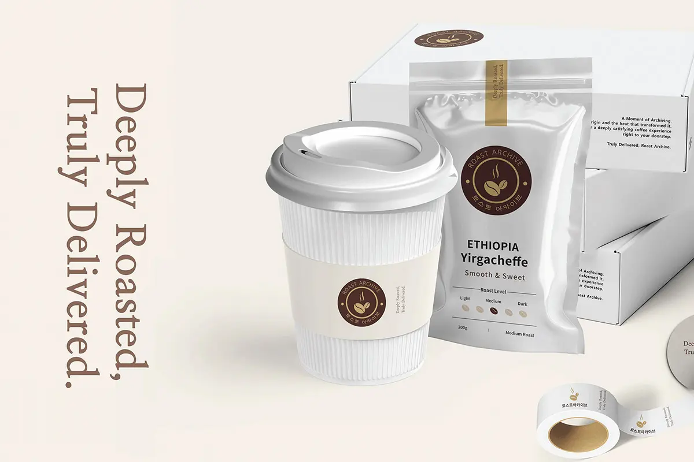
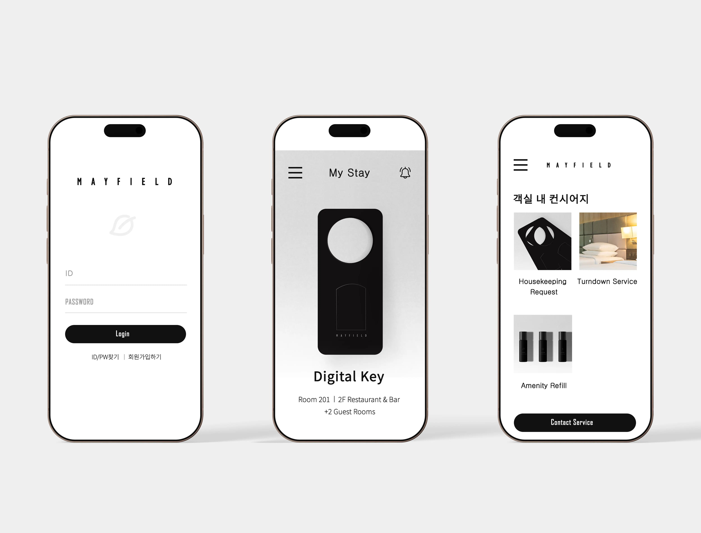
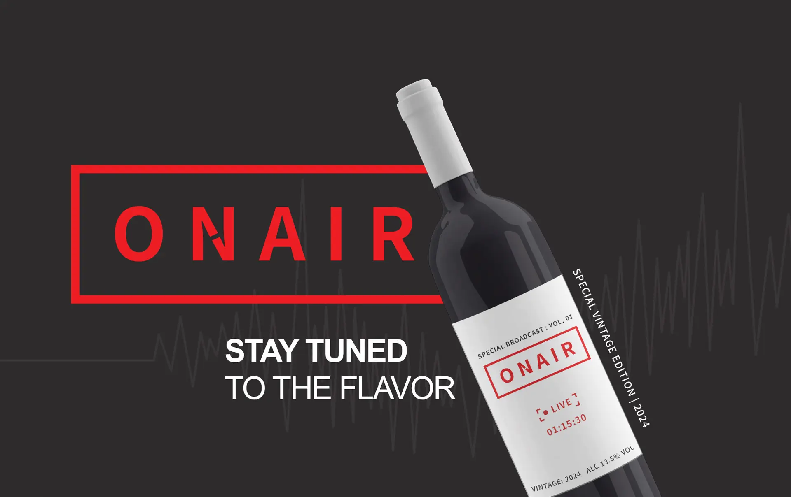
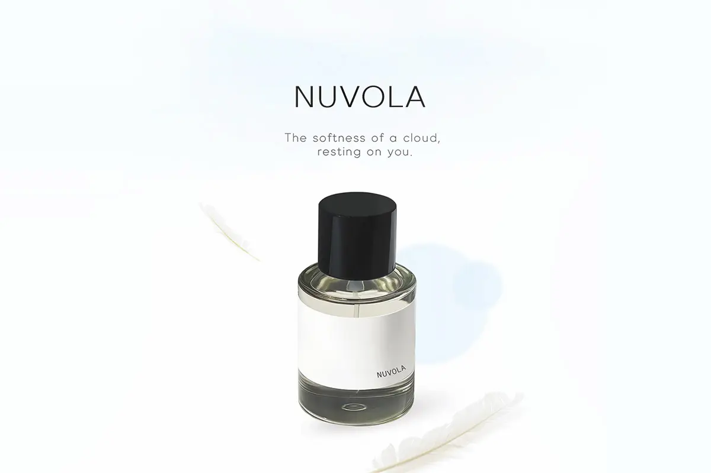

Roast Archive

스페셜티 커피 브랜드의 로고 및 패키지 시스템입니다. 원두의 산미와 바디감을 직관적인 그래픽 레이아웃으로 표현했습니다.
공백의 미학을 통해 브랜드의 본질을 투영하는 브랜딩 프로젝트입니다.

스페셜티 커피 브랜드의 로고 및 패키지 시스템입니다. 원두의 산미와 바디감을 직관적인 그래픽 레이아웃으로 표현했습니다.

메이필드 호텔의 가치를 새롭게 정의한 리브랜딩 프로젝트입니다. 기하학적 도형을 활용하여 미니멀한 어메니티와 룸카드를 디자인했습니다.

와인 라벨링과 브랜드의 전문성을 담았습니다. 와인이 선사하는 특별한 순간을 기록합니다.

구름의 부드러움을 모티브로 진행한 향수 브랜드 브랜딩입니다. 몽환적이고 감성적인 비주얼을 통해 브랜드의 촉각적 경험을 강조했습니다.